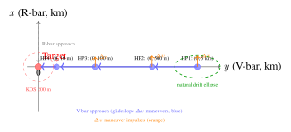

Chapter 27: On-Orbit Servicing and Space Robotics¶
“The greatest engineering challenge is not building a satellite—it is fixing one, refueling one, or removing one, while both you and it are hurtling through vacuum at eight kilometers per second.”
On-orbit servicing (OOS) represents one of the most technically demanding and commercially consequential frontiers in contemporary space engineering. The fundamental premise is straightforward: a spacecraft that has exhausted its propellant, suffered a manageable fault, or simply reached an age where its technology is obsolete need not be abandoned. Given a servicer vehicle with the rendezvous capability, robotic manipulation dexterity, and on-orbit logistics support required, that spacecraft can be refueled, repaired, upgraded, or safely deorbited. The economic logic is compelling—a geostationary satellite that cost $300 million to build and launch and carries a 15-year commercial payload license represents an enormous stranded asset if it runs out of propellant at year 12. This chapter develops the technical foundations of OOS across rendezvous and proximity operations, robotic manipulation, commercial mission heritage, propellant transfer, in-space manufacturing, and the emerging regulatory and market frameworks governing the industry (Reed et al. 2016).
27.1 Introduction to On-Orbit Servicing¶
On-orbit servicing encompasses a broad spectrum of activities performed by one spacecraft (the servicer) in the vicinity of another (the client): inspection and health assessment, refueling and consumable replenishment, component replacement and upgrade (orbital replacement unit exchange), attitude stabilization and orbit maintenance, relocation to a new orbital slot, and controlled deorbit for end-of-life disposal. Each activity imposes distinct requirements on rendezvous precision, docking mechanism compatibility, robotic dexterity, and propellant management, and each carries distinct regulatory implications regarding spacecraft jurisdiction, liability, and spectrum rights.
The distinction between cooperative and non-cooperative targets is fundamental to OOS mission design. A cooperative client is designed with standardized interfaces, markers, or grapple fixtures that facilitate capture. A non-cooperative target—the vast majority of existing in-orbit assets and all debris objects—lacks these features and must be captured by methods that tolerate tumbling, uncertain surface properties, and the absence of any designed attachment points.
The technical genealogy of OOS extends to the earliest days of human spaceflight. Skylab’s rescue EVA (1973), the Solar Maximum Mission repair by Shuttle crew (1984), and—most memorably—the five Hubble Space Telescope servicing missions (1993–2009) demonstrated that complex on-orbit maintenance was operationally feasible. The evolution from human-performed to robotic OOS reflects the economic imperative to reduce costs by eliminating human spaceflight infrastructure while maintaining or exceeding servicing capability for a growing client population that includes both GEO commercial satellites and LEO constellations.
27.2 Historical Background¶
27.2.1 Hubble Space Telescope Servicing Missions¶
The Hubble Space Telescope (HST) servicing program, spanning five Shuttle missions over 16 years, remains the definitive proof of concept for on-orbit servicing of a large, complex space observatory. Each mission demonstrated progressively more sophisticated servicing capabilities and generated a body of human factors engineering knowledge that directly informs current robotic OOS system design.
SM1 (STS-61, December 1993).
The first servicing mission corrected the infamous spherical aberration in HST’s primary mirror by installing the Corrective Optics Space Telescope Axial Replacement (COSTAR) module—a set of small corrective mirrors that intercepted light paths to the spectrographs and cameras—and replacing the Wide Field Planetary Camera with WFPC2, which incorporated its own internal corrective optics. Five EVAs totaling 35 hours 28 minutes installed gyroscope replacements, solar array upgrades, and magnetometer improvements. The mission validated the “design for serviceability” philosophy: HST’s crew-aids and tools, standardized bolt sizes, and EVA-compatible connector covers were essential preconditions for successful servicing.
SM3B (STS-109, March 2002).
SM3B installed the Advanced Camera for Surveys (ACS), replacing the Faint Object Camera, and performed the first cryogenic replacement of the Near Infrared Camera and Multi-Object Spectrometer (NICMOS) cooling system—a technically unprecedented cryocooler installation under EVA conditions. New solar arrays replaced the original flexible roll-out panels.
SM4 (STS-125, May 2009).
The final servicing mission installed the Cosmic Origins Spectrograph (COS) and Wide Field Camera 3 (WFC3), repaired the Advanced Camera for Surveys (ACS), and installed a Soft Capture and Rendezvous System (SCRS) to facilitate future robotic deorbit if required. About 37 hours of spacewalking were devoted to SM4 across five spacewalks. The SCRS installation foreshadowed the design of standardized docking interfaces now being developed for robotic OOS systems. The Hubble servicing missions showed the value of designing hardware for servicing: standardized fasteners, captive screws, color-coded connectors, and tool-compatible handrails reduce crew time and the risk of error.
27.2.2 DARPA Phoenix Program¶
DARPA’s Phoenix program (2012–2014) developed the concept of repurposing the valuable apertures and structural components of retired GEO satellites by dispatching small robotic “satlets” to harvest antennas and solar arrays from defunct spacecraft and attach them to new, small bus platforms—effectively constructing new satellites from salvaged components in GEO orbit. The Tendrils robotic manipulator concept—a flexible, snake-like gripper designed to wrap around irregular surfaces—addressed the fundamental challenge of grasping non-cooperative targets without designed attachment points. Although Phoenix was ultimately canceled before flight, the program generated substantial intellectual property in robotic manipulation, proximity operations, and microsat bus design that informed subsequent commercial OOS ventures.
27.2.3 ISS Robotic Servicing Heritage¶
The International Space Station provides an operational robotic servicing environment where Orbital Replacement Unit (ORU) exchange, inspection, and logistics operations are routinely performed using the Space Station Remote Manipulator System (SSRMS, Canadarm2) and the Special Purpose Dexterous Manipulator (SPDM, Dextre). The ISS robotic systems have collectively performed more than 50 ORU exchanges, validating the design of standardized space interfaces and robotic ORU tool changeout mechanisms under operational conditions—not merely in laboratory demonstrations. The SPDM successfully replaced the CTC-1 commercial television camera in 2014 using the Orbital Replacement Unit Tool Changeout Mechanism (OTCM), a modular end-effector that interfaces with a standardized socket drive on all ISS ORUs.
27.3 Rendezvous and Proximity Operations¶
27.3.1 Relative Motion Dynamics¶
Relative motion between two spacecraft in nearby circular orbits is described to first order by the Clohessy-Wiltshire-Hill (CWH) equations, derived by linearizing the equations of motion about a circular reference orbit of mean motion \(n = \sqrt{\mu/a^3}\) (Clohessy and Wiltshire 1960):
where the coordinate frame is centered on the target spacecraft with \(x\) pointing radially outward (R-bar), \(y\) pointing in the direction of orbital velocity (V-bar), and \(z\) pointing normal to the orbital plane. The terms \(f_x\), \(f_y\), \(f_z\) represent specific forces (thrust acceleration) applied to the chaser spacecraft. The out-of-plane equation ((27.3)) is decoupled from the in-plane equations ((27.1))–((27.2)); the out-of-plane motion is simple harmonic at frequency \(n\).
The homogeneous solution (zero thrust) to the CW equations reveals important natural motion modes:
-
Drift orbit: An uncontrolled chaser displaced in the \(x\)-direction from the target will execute a drift along the \(y\)-axis at rate \(\dot{y} = -3n x_0 / 2\), producing a secular drift that causes unbounded range growth. This natural drift is exploited in passive V-bar approach corridors.
-
Elliptical motion: A chaser with initial conditions in the \(x\)-\(y\) plane traces a 2:1 ellipse centered on the drift trajectory, with the \(x\)-amplitude twice the \(y\)-amplitude.
-
Hold point: A specific set of initial velocities produces a periodic relative orbit about the target, enabling station-keeping at a defined relative distance without secular drift—relevant for inspection holds.
27.3.2 Glideslope Approach Strategies¶
Two primary approach corridors are used for rendezvous and docking in low Earth orbit and GEO proximity operations:
V-bar Approach.
The servicer approaches along the V-bar (+\(y\) direction, co-velocity with the target). Natural orbital mechanics cause the chaser’s orbit to decay slightly lower than the target’s (lower altitude = higher velocity), so a perfectly placed chaser will drift forward relative to the target without thrust—enabling passive, propellant-free station-keeping on the approach corridor outside the keep-out zone. V-bar approach is preferred for RPOD (Rendezvous, Proximity Operations, and Docking) with the ISS and other targets in LEO.
R-bar Approach.
The servicer approaches from directly below the target along the R-bar (+\(x\), radial) direction. Solar radiation pressure acts in the \(+y\) direction (anti-sunward), safely pushing the chaser away from the target if thrust is lost—making R-bar a fail-safe approach direction for docking with targets where SRP-induced drift would be critical. The ISS transiting vehicle program uses R-bar approach for Soyuz, Progress, HTV, and Dragon vehicles.
The glideslope approach divides the approach corridor into a series of waypoints (hold points) separated by calculated \(\Delta v\) maneuvers that maintain the chaser precisely on the approach trajectory. A typical sequence for GEO OOS might proceed: 5 km hold \(\to\) 500 m hold \(\to\) 100 m hold \(\to\) 10 m pre-contact hold \(\to\) docking contact.
27.3.3 Navigation Sensors for Proximity Operations¶
LIDAR Systems.
The Neptec TriDAR 3D LIDAR, developed for ISS COTS program navigation, operates at wavelength 1550 nm with a range of 0.3–3000 m and provides 3D point cloud data at 10 Hz frame rate. Accuracy is approximately 0.1 m in range and 0.1\(^\circ\) in angular bearing at 100 m range. The TriDAR integrates a flash LIDAR mode (range image at full camera resolution) with a scanning LIDAR mode for higher resolution local mapping, enabling both long-range acquisition (\(>\)500 m) and close-range (\(<\)5 m) precision navigation from a single sensor head.
Stereo Vision Systems.
Stereo camera pairs provide passive navigation without active illumination, benefiting safety-critical scenarios where laser illumination of the target must be avoided. Photogrammetric feature matching on structural landmarks (corners, edges, reflective markers) achieves range accuracy of \(\pm\)5 cm at 10-m separation with 10-cm baseline stereo cameras. Template matching and line-edge tracking algorithms provide real-time pose updates at video frame rates (25–30 Hz) suitable for rendezvous terminal phase guidance.
Relative GPS.
For missions in LEO with GPS availability, differential GPS (DGPS) between two receivers—one on the servicer, one on the client—provides relative positioning with \(\pm\)1 m accuracy at baselines up to 1 km. Below 10-m range, GPS multipath and antenna blockage degrade accuracy, necessitating handover to LIDAR or vision-based navigation.
CNN-Based Pose Estimation.
As discussed in Chapter 26, deep learning pose estimation achieves sub-1% translation error and below 1\(^\circ\) rotation error at 5-m range on the SPEED benchmark, enabling autonomous rendezvous to non-cooperative or weakly-cooperative targets without designed fiducial markers.
27.3.4 Proximity Operations Safety¶
Proximity operations safety architecture defines exclusion zones around the client spacecraft within which the servicer must not enter without explicit authorization, and escape trajectories that can be executed automatically if communication is lost or an anomaly is detected. For GEO operations, a standard keep-out sphere (KOS) of 200-m radius is maintained during approach phases, with entry requiring positive ground authorization. Inside the KOS, the servicer must maintain a pre-planned escape trajectory: a pre-computed thrust sequence that, if executed at any point along the approach, returns the servicer to a safe separation distance within one orbital period without risk of collision with the client. The escape trajectory is uploaded to onboard memory before each proximity phase and can be triggered autonomously by the fault protection system if telemetry loss exceeds a configurable timeout (typically 10–30 seconds).
27.4 Robotic Manipulators¶
27.4.1 Canadarm2 (SSRMS)¶
The Space Station Remote Manipulator System (SSRMS), known as Canadarm2, is a 7-DOF serial robotic arm 17.6 m in length and capable of handling payloads up to 116,000 kg—including the Shuttle orbiter during berthing operations. Each of the seven joints provides rotation about a single axis, with joint angles ranging from \(\pm\)270\(^\circ\) to \(\pm\)360\(^\circ\) depending on joint number. Latching End Effectors (LEEs) at each end of the arm can grapple the grapple fixtures (Power Data Grapple Fixtures, PDGFs) distributed across the ISS truss, enabling the “inchworm” walking motion that allows Canadarm2 to traverse the full length of the 109-m truss. The Mobile Base System (MBS) on the Main Truss provides a translating rail that extends Canadarm2’s reach across the full truss length, enabling payload handoffs from one end of the ISS to the other.
27.4.2 Dextre (SPDM)¶
The Special Purpose Dexterous Manipulator (SPDM), known as Dextre, is a dual-arm robotic system 3.5 m in total span with two identical 7-DOF arms, each capable of independent operation. The Orbital Replacement Unit Tool Changeout Mechanism (OTCM) end-effector on each arm integrates a grapple mechanism, camera and lighting system, torque sensor, and tool socket into a single modular end-effector that interfaces with all standard ISS ORU sockets. Dextre has performed more than 50 ORU exchanges on the ISS external truss without crew EVA, including battery ORU replacement, pump module exchange, and camera replacement—validating the operational concept of robotic maintenance for large space systems.
Dextre’s 6-axis force-torque sensor on each arm wrist enables compliant manipulation: the control system detects contact forces and adjusts arm velocity to maintain contact forces within specified limits, preventing damage to both the arm and the ORU during precision insertion and extraction operations.
27.4.3 European Robotic Arm (ERA)¶
The European Robotic Arm (ERA) was installed on the Russian Multipurpose Laboratory Module (Nauka) of the ISS in 2021. ERA is an 8-DOF arm with an extended length of 11.3 m and a payload handling capacity of 8000 kg. ERA employs a symmetric two-end design: grapple fixtures at both ends enable a walking motion along the Russian segment’s outer surface, where ERA can transfer from one attached end to another, extending its reach beyond what a fixed-base arm could achieve. ERA is designed to support EVA preparation and hardware exchange on the Russian ISS segment, including solar panel replacement and equipment transfer from docked Progress vehicles.
27.4.4 Force-Torque Control for Compliant Manipulation¶
For contact operations—inserting a connector, tightening a bolt, or capturing a grapple fixture—purely position-controlled robotic arms generate destructive contact forces if positioning errors or target compliance cause the commanded trajectory to intersect a rigid surface. Impedance control instead specifies the desired dynamic relationship between end-effector position error and contact force:
where \(\mathbf{M}_d\), \(\mathbf{B}_d\), \(\mathbf{K}_d\) are the desired inertia, damping, and stiffness matrices; \(\mathbf{x}_d\) is the desired trajectory; and \(\mathbf{x}\) is the actual end-effector position measured by kinematics. By tuning \(\mathbf{K}_d\) to be small during contact and large during free motion, the controller behaves compliantly at surfaces and precisely in free space. Hybrid force-position control combines impedance control in contact-force-controlled directions with pure position control in uncontrolled directions, enabling insertion of a connector with precise angular alignment (position control) while controlling insertion force (force control).
27.4.5 Teleoperation with Time Delay¶
Human teleoperation of space robotics from Earth is complicated by round-trip communication latency: approximately 600 ms for LEO operations through geosynchronous relay satellites, 3–22 minutes one-way for Mars surface operations. At delays above 300 ms, human operators experience severe degradation in task performance and increased contact force errors, because operator corrections based on visual feedback arrive at the arm after the dynamic situation has evolved.
The Smith predictor compensates for known, constant communication delays by running a model of the remote environment in the local operator display, advancing the predicted state by the delay duration. The operator interacts with the model, and corrections based on delayed real-world feedback update the model. Predictive display systems at the Canadian Space Agency have demonstrated teleoperation latency compensation up to 1.5 seconds with task completion times approaching zero-delay baseline performance on standard peg-in-hole assembly tasks. Model-mediated teleoperation extends this concept to variable-delay channels by decoupling the operator’s action space from the physical robot through an explicit world model, maintaining a stable shared autonomy interaction even for delays up to 20 minutes.
27.4.6 Grasping Non-Cooperative Tumbling Objects¶
The most technically demanding OOS scenario is the capture of a non-cooperative target—a defunct satellite or rocket body that is slowly tumbling in an uncontrolled attitude with angular rates of 0.5–5\(^\circ\)/s. The capture sequence consists of three phases: (1) estimation: the servicer uses vision-based angular rate estimation from optical cameras to determine the target’s angular velocity \(\boldsymbol{\omega}\) and orientation trajectory with sufficient precision to predict the position of grapple surfaces over a 10–30 second capture window; (2) synchronization: the servicer adjusts its own attitude to match the target’s angular velocity within a tolerance of \(\pm\)0.5\(^\circ\)/s in all axes before contact, minimizing angular momentum exchange at capture; (3) capture and detumbling: the manipulator establishes contact at the planned grapple point and applies controlled damping torques to gradually reduce the combined system’s angular rate to zero over 30–120 seconds.
Contact dynamics at capture are governed by the coefficient of restitution \(e\) (ratio of post- to pre-impact relative velocity, typically 0.1–0.3 for spacecraft structures) and Coulomb friction model (\(\mu = 0.3\)–\(0.7\) for aluminum-aluminum contact). Analysis shows that synchronization accuracy is the dominant factor in capture probability: angular rate errors above 1\(^\circ\)/s reduce capture probability from \(>\)95% to below 70% for typical manipulator geometries.
27.5 Commercial OOS Missions¶
27.5.1 Mission Extension Vehicle (MEV)¶
The Northrop Grumman SpaceLogistics Mission Extension Vehicle represents the world’s first commercially deployed robotic OOS system. MEV-1 completed its docking to Intelsat 901 on February 25, 2020—the first commercial docking between two satellites in GEO orbit. MEV-2 followed, docking to Intelsat 10-02 on April 12, 2021. The MEV docking mechanism exploits a structural feature present on many older GEO satellites: the apogee kick motor (AKM) nozzle. The MEV inserts a grapple probe into the nozzle throat (typically 40–50 cm diameter), engaging retention clips in the nozzle convergent section. This mechanism requires no designed interface on the client satellite and is compatible with a large population of existing GEO platforms (Reed et al. 2016).
Once docked, the MEV provides propulsion and attitude control to the combined MEV-client stack, effectively extending the life of the client satellite by 5 years. The client’s own propulsion system is no longer used; the MEV’s 12 kW solar electric propulsion (ion engine backup plus conventional bipropellant thrusters for attitude control) maintains the client’s orbital slot and station-keeping within ITU filing requirements. At end of the service period, the MEV undocks and proceeds to the next client in its service manifest. MEV-1 successfully completed its first service period and undocked from Intelsat 901 in April 2022.
27.5.2 Mission Extension Pod (MEP)¶
The Mission Extension Pod is a smaller, lighter derivative of the MEV concept. The MEP provides propulsion capability only (no attitude control, unlike MEV), and is designed for multi-pod delivery: a single MEV-class vehicle can deliver multiple MEPs to different client satellites on a single mission. The first MEPs were planned for launch in the mid-2020s. The MEP latches to the client satellite using the same nozzle-grapple mechanism as the MEV, then autonomously manages north-south station-keeping and orbital maintenance using its own propellant supply. Multiple MEPs can be pre-positioned on a client satellite, providing redundant life extension capability or extended service duration beyond what a single MEP could provide.
27.5.3 Astroscale ELSA-d and ELSA-M¶
Astroscale’s End-of-Life Services by Astroscale demonstration mission (ELSA-d), launched March 2021, demonstrated the proximity operations and magnetic capture technology fundamental to active debris removal. ELSA-d comprised two spacecraft: a 175-kg chaser and a 17-kg client with a magnetic docking plate installed. The chaser demonstrated capture, release, and re-capture of the client in multiple approach scenarios, including a client in non-cooperative tumbling mode, validating the magnetic capture mechanism and vision-based navigation under diverse illumination conditions.
The commercial ELSA-M (Multi) system targets multi-client debris removal missions where a single chaser visits and deorbits multiple defunct satellites in a single mission. Astroscale has secured contracts from OneWeb and other operators for ELSA-M services, representing the first commercial active debris removal contracts awarded.
27.5.4 OSAM-1 (Restore-L / Robotic Servicing of Geosynchronous Satellites)¶
NASA’s On-orbit Servicing, Assembly, and Manufacturing 1 (OSAM-1, formerly Restore-L) mission targets the robotic refueling of Landsat-7, which was not designed for servicing and carries no designed refueling interfaces. The mission requires development of the Joint Fluid Attachment (JAFE) interface—a robotic tool that cuts and seals a propellant line, installs a non-native refueling port, and transfers hydrazine—at an orbital altitude of 705 km. OSAM-1 was developed by NASA’s Goddard Space Flight Center with a commercial spacecraft builder, and would have been among the most complex robotic servicing missions attempted, since the target was designed with no servicing accommodation. NASA terminated the mission in 2024 because of cost growth and schedule delays, although the technologies it developed continue to be used in other work.
27.5.5 OSAM-2 (Archinaut One)¶
NASA’s OSAM-2 mission (Archinaut One), developed by Redwire Space (formerly Made In Space), was to demonstrate in-space manufacturing and assembly technology; NASA ended the mission in 2023. The mission concept uses a robotic arm-mounted 3D printer to extrude and assemble a 10-m structural beam in the vacuum and microgravity of orbit, then autonomously attaches solar array panels to the beam. The “Archinaut” approach is to construct large satellite structures in orbit rather than launching them folded within a fairing, which could in principle allow structures larger than the launch volume permits.
27.5.6 Orbit Fab Propellant Depots¶
Orbit Fab is developing a commercial propellant depot network based on the Rapidly Attachable Fluid Transfer Interface (RAFTI) standard—a 3/8-inch ball valve coupling mechanism designed for robotic attachment without specialized end-effectors. The RAFTI standard has been published openly to enable multi-vendor compatibility. Orbit Fab has flown demonstration hardware (including a refuelling tanker launched in 2021) and describes commercial depots in GEO as a future service; the timeline has not been firm. Xenon tankers for electric propulsion refueling represent a second product line targeting the growing GEO EP satellite fleet.
27.6 Propellant Transfer and Refueling¶
27.6.1 Zero-Gravity Fluid Management¶
In the absence of gravitational settling, liquid propellant in a spacecraft tank is distributed arbitrarily between the tank walls and center, driven by capillary forces, surface tension, and residual accelerations from spacecraft attitude motion. The propellant management device (PMD)—a network of screen channels, vanes, and diaphragms inside the tank—uses capillary forces (surface tension \(\sigma \cos\theta\) over characteristic pore size \(r\): capillary pressure \(\Delta P = 2\sigma\cos\theta / r\)) to maintain a propellant-liquid channel connected to the outlet under all attitude conditions, preventing vapor ingestion into the propellant feed line.
For propellant transfer between two spacecraft tanks, a settling burn of \(\sim\)10\(^{-3}\) g is typically required to establish a consistent propellant distribution favorable for transfer initiation—the transfer cannot begin until propellant is against the transfer outlet. The transfer mass flow rate is limited by pressure differential, feed line conductance, and inlet screen capillary recovery time, typically yielding transfer rates of 0.1–1 kg/min for monopropellant hydrazine systems.
27.6.2 Cryogenic Propellant Transfer Challenges¶
Cryogenic propellants (liquid oxygen at 90 K, liquid hydrogen at 20 K) offer the highest specific impulse of any chemical propellant combination but present severe challenges for extended on-orbit storage and transfer. Passive boiloff rates for uninsulated cryogenic tanks in LEO reach 3–5%/day due to solar and Earth albedo thermal loading, necessitating either active cryocooling (adding mass and power) or rapid transfer operations that minimize boiloff time. The no-vent fill (NVF) technique transfers cryogen into a warm receiver tank without venting the receiver, relying on condensation of pressurant vapor to manage ullage pressure—validated on ground in NASA’s Cryogenic Fluid Management (CFM) Facility but not yet demonstrated in orbit. ULA’s ACES (Advanced Cryogenic Evolved Stage) and NASA’s Cryogenic Propellant Storage and Transfer (CPST) program have developed hardware for the first in-space cryogenic transfer demonstration.
27.6.3 Standard Refueling Interfaces¶
The proliferation of incompatible proprietary propellant interfaces across the GEO satellite fleet is a fundamental impediment to commercial refueling. Several standardization efforts are underway:
-
RAFTI (Orbit Fab): Rapidly Attachable Fluid Transfer Interface, 3/8-inch ball valve, suitable for hydrazine and xenon, commercially published open standard.
-
ESA Serviceable Docking Interface (SDI): Standardized androgynous docking ring for future ESA spacecraft, mechanically and electrically compatible with servicing vehicles.
-
CONFERS Standard: Commercial On-Orbit Servicing Norms, Frameworks, and Standards, an industry consortium defining interface requirements for new satellites designed with servicing accommodation.
-
DARPA ROSA: Robotic Operations Servicing Accessories standard connectors designed for robotic manipulation without specialized end-effectors.
27.6.4 Refueling Economics¶
The economic case for GEO satellite refueling is attractive when the cost of a refueling mission is compared to the cost of a replacement satellite. A new GEO communications satellite, including its launch, costs of the order of hundreds of millions of dollars and has a design life of about 15 years; a mission that extends the life of an existing satellite by a few years costs a fraction of that, which is the basis of the economic case (the actual prices of life-extension services are commercial and are not public). Beyond the direct cost comparison, refueling also preserves the ITU orbital slot filing, avoids the lengthy procurement cycle for a replacement satellite (typically 4–6 years from contract to orbit), and maintains revenue continuity for the operator (Reed et al. 2016).
27.7 In-Space Assembly and Manufacturing¶
27.7.1 Archinaut Technology¶
Redwire Space’s Archinaut technology employs a robotic arm-mounted Integrated Structural Intelligent System (ISIS) that extrudes PEEK (polyether ether ketone) thermoplastic structural beams in the space environment, using UV radiation (abundant in orbit) and a thermal curing process validated in thermal-vacuum chamber testing. Ground demonstrations have produced 10-m beams in 8 hours; orbital demonstrations are planned with the OSAM-2 mission. The compressive strength of vacuum-deposited PEEK beams is approximately 85% of injection-molded baseline, attributable to layer bonding differences in vacuum—a factor that drives structural margin selection for beam applications.
27.7.2 Large Aperture Assembly¶
Future space observatories at the 30-m aperture class—beyond what any current or planned launch vehicle fairing can accommodate—require assembly from smaller segments in orbit. A robotic assembly sequence for a 30-m segmented mirror telescope would position individual mirror segments to \(\pm\)0.1 mm tolerance using laser metrology feedback and compliant latching mechanisms, then align them optically using active wavefront sensing. The assembly sequence is driven by Monte Carlo structural analysis to identify optimal segment placement order minimizing induced misalignments during multi-week assembly operations in GEO or L2 orbit.
27.7.3 Additive Manufacturing in Orbit¶
The Additive Manufacturing Facility (AMF) aboard the ISS, operated by Made In Space, has produced over 200 parts in orbit using Fused Deposition Modeling (FDM) with ABS plastic, demonstrating that the FDM process is functional in microgravity with layer-to-layer adhesion comparable to Earth-printed baselines. Vacuum-compatible thermoset resins and metal powder bed fusion (Sciaky EBAM—Electron Beam Additive Manufacturing) are under development for higher-performance structural applications. In-orbit manufacturing enables rapid production of replacement tools, fixtures, and structural inserts without the 6-month logistics pipeline from Earth—potentially eliminating several categories of mission-ending spare part shortfalls.
27.8 Future OOS Market¶
27.8.1 Market Analysis and Projections¶
The commercial OOS market is advancing from proof-of-concept to initial operational capability. Northrop Grumman’s MEV-1 and MEV-2 are operating commercially, and market analysts expect growth driven by the many GEO satellites reaching end of life each year and by demand from LEO constellation operators for decommissioning services; market-size forecasts differ widely. The expansion of electric propulsion across the GEO fleet creates a new market segment for xenon or krypton propellant resupply—EP satellites nominally sized for 15 years of station-keeping could potentially operate for 20–25 years with propellant resupply, at a fraction of replacement cost.
27.8.2 Regulatory Framework¶
OOS creates novel regulatory situations not contemplated in the original frameworks developed for single-operator satellites: (1) ITU spectrum coordination: the ITU framework ties orbital slot rights to a specific satellite physical object; when a docked MEV provides propulsion to a satellite, the ITU filing continuity of the client is maintained as long as the client’s payload remains the active transmitter. (2) FCC transfer of control: docking a servicer to a client satellite may trigger FCC transfer-of-control authorization requirements in the US, as the servicer operator gains de facto control over the combined spacecraft’s position and attitude. (3) Liability: under the Outer Space Treaty and Liability Convention, the state that launches a space object retains liability for that object; when a MEV docks to a satellite launched by a different state, the liability assignment for the docked configuration is ambiguous. COPUOS (Committee on the Peaceful Uses of Outer Space) is actively discussing OOS regulatory frameworks, with the goal of developing internationally agreed guidelines by the late 2020s.
27.8.3 Industry Standardization¶
The CONFERS (Consortium for Execution of Rendezvous and Servicing Operations) initiative, started with DARPA support and including satellite operators and servicing companies, develops non-binding technical and operational guidance for servicing operations, such as principles for safe rendezvous and proximity operations, data sharing between servicer and client, and interface design. Some satellite manufacturers have begun to offer servicing-compatible interfaces as optional features.
27.9 Key Equations¶
CW Relative Motion State Transition.
The closed-form CW state transition from initial state \((x_0, y_0, \dot{x}_0, \dot{y}_0)\) at \(t=0\) to state at time \(t\):
These solutions enable planning of fuel-optimal rendezvous maneuver sequences for the V-bar and R-bar approach profiles.
Impedance Control Law.
Restated for the 6-DOF case with diagonal stiffness matrix \(\mathbf{K}_d = \text{diag}(k_1,…,k_6)\):
where \(\mathbf{e} = \mathbf{x}_d - \mathbf{x}\) is the Cartesian error, \(\mathbf{J}\) is the Jacobian, and \(\mathbf{C}\), \(\mathbf{g}\) are Coriolis and gravity compensation terms.
Propellant Mass for Refueling.
The propellant mass \(m_p\) needed to extend a satellite’s life by \(\Delta t\) years given annual station-keeping \(\Delta v_{SK}\) (m/s/year) and specific impulse \(I_{sp}\) (s):
For a GEO satellite with \(m_0 = 2000\) kg, \(\Delta v_{SK} = 50\) m/s/yr, \(I_{sp} = 220\) s, and \(\Delta t = 5\) yr: \(m_p \approx 210\) kg of hydrazine—a fraction of the satellite’s total propellant capacity.
27.10 Mission and System Comparison Tables¶
| Mission | Operator | Year | Orbit | Technique | Outcome |
|---|---|---|---|---|---|
| MEV-1 | Northrop Grumman | 2020 | GEO | Nozzle grapple dock | 5-yr life ext. Intelsat 901 |
| MEV-2 | Northrop Grumman | 2021 | GEO | Nozzle grapple dock | 5-yr life ext. Intelsat 10-02 |
| ELSA-d | Astroscale | 2021 | LEO | Magnetic capture | Proximity ops demo |
| TANKER-001 | Orbit Fab | 2021 | LEO | RAFTI interface demo | Interface demonstration |
| ClearSpace-1 | ClearSpace SA/ESA | planned | LEO | Claw capture | Target redefined in 2023 |
| ADRAS-J (CRD2 Ph.1) | Astroscale-Japan | 2024 | LEO | Proximity ops RPO | H-IIA RPO demo |
| System | Platform | Length (m) | DOF | Payload Cap. |
|---|---|---|---|---|
| Canadarm2 (SSRMS) | ISS | 17.6 | 7 | 116,000 kg |
| Dextre (SPDM) | ISS | 3.5 (arm) | 7+7 | 600 kg |
| European Robotic Arm | ISS (Russian) | 11.3 | 8 | 8,000 kg |
| JEMRMS (Japan) | ISS (JEM) | 10.0 | 6 | 7,000 kg |
| MEV Capture Mechanism | MEV-1/2 | N/A (grapple) | 1 | N/A |
| ClearSpace Claw | ClearSpace-1 | 2.0 (arm) | 4 arms | 112 kg |
27.11 CW Trajectory Diagram¶
Figure 27.1 illustrates a V-bar approach trajectory in the Clohessy-Wiltshire (Hill) frame, showing the natural drift and controlled hold-point approach.

27.12 Summary¶
Chapter 27 Key Takeaways
-
On-orbit servicing encompasses life extension (MEV), refueling (OSAM-1), inspection, relocation, and active debris removal—each imposing distinct rendezvous, manipulation, and interface requirements.
-
The Clohessy-Wiltshire equations govern relative motion for close proximity operations; V-bar glideslope and R-bar approaches provide the principal rendezvous corridors with distinct safety and propellant trade-offs.
-
Navigation sensor suites combine LIDAR (0.1-m range accuracy at 100 m), stereo vision (photogrammetric), relative GPS (\(\pm\)1 m in LEO), and CNN-based pose estimation (\(<\)1% error at 5 m) into layered architectures.
-
Commercial OOS missions (MEV-1/2, Astroscale ELSA-d, ClearSpace-1) have demonstrated or are demonstrating the full lifecycle from rendezvous to capture to life extension or deorbit in both GEO and LEO environments.
-
Impedance control with wrist force-torque sensing enables compliant manipulation for ORU exchange and propellant transfer without damaging either the manipulator or client hardware.
-
Propellant refueling economics are compelling: a $50–100M refueling mission providing 5-year life extension of a $300M GEO satellite delivers NPV-positive returns even at conservative revenue assumptions.
-
Interface standardization (RAFTI, CONFERS, ESA SDI) and regulatory clarification (ITU, FCC, COPUOS) are the two principal non-technical barriers to widespread OOS market adoption.